visstat_core() implements the decision tree used by
visstat. It receives a data.frame and two column names,
determines the corresponding analysis route, creates the diagnostic and
result plots, and returns the selected test results as a visstat
object.
Arguments
- dataframe
data.framewith at least two columns.- varsample
characterstring matching a column name indataframe. Interpreted as the response if the referenced column is of classnumericorintegerand the column named byvarfactoris of classfactor.- varfactor
characterstring matching a column name indataframe. Interpreted as the grouping variable if the referenced column is of classfactorand the column named byvarsampleis of classnumericorinteger.- conf.level
Confidence level
- correlation
Logical. If FALSE (default), performs simple linear regression analysis with confidence and prediction bands. If TRUE, performs Spearman correlation analysis with trend line only (no regression interpretation).
- numbers
a logical indicating whether to show numbers in mosaic count plots.
- minpercent
number between 0 and 1 indicating minimal fraction of total count data of a category to be displayed in mosaic count plots.
- group_test
Character. For Route 1 only,
"gated"(the default) keeps the assumption gates,"welch"forces Welch-type mean tests, but still displays the assumption-diagnostic plot and warns when residual normality is rejected, whereas"rank"forces Wilcoxon/Kruskal-Wallis rank tests without assessing the assumptions.- graphicsoutput
saves plot(s) of type "png", "jpeg", "pdf", "svg", "ps" or "tiff" in directory specified in
plotDirectory. If graphicsoutput=NULL, no plots are saved. Any other value is not supported byCairo(): it triggers a warning and no file is written.- plotName
graphical output is stored following the naming convention "plotName.graphicsoutput" in
plotDirectory. Without specifying this parameter, plotName is automatically generated following the convention "statisticalTestName_varsample_varfactor".- plotDirectory
specifies directory, where generated plots are stored. Default is current working directory.
- qq_nsim
Integer number of simulated refits for the Q-Q envelopes in the assumption diagnostics. Defaults to the option
visStatistics.qq_nsim, or 5000 if that is unset.- plot_args
Optional named list of base graphics parameters.
Value
An object of class "visstat" containing the results of
the automatically selected statistical test. The specific contents depend on
which test was performed.
Additionally, the returned object includes two attributes:
plot_paths: Character vector of file paths where plots were saved (ifgraphicsoutputwas specified)captured_plots: List of captured plot objects for programmatic access
Details
The decision logic is organised into four routes. Route 1 handles a
numeric response with a categorical predictor. By default, Route 1 uses
residual-based test selection: Shapiro–Wilk on model residuals gates
mean-based versus rank-based analysis, and Levene gates equal-variance
versus Welch-type mean tests inside the mean branch. Above 5000
observations, where shapiro.test() is undefined, the
Anderson–Darling test takes over as the residual-normality gate.
Alternatively,
group_test = "welch" forces Welch-type mean tests, and
group_test = "rank" forces Wilcoxon/Kruskal–Wallis tests.
Route 2 handles ordered responses with categorical predictors by converting
the ordered response to integer level codes and applying Wilcoxon or
Kruskal–Wallis tests. Route 3 handles two numeric variables by fitting
lm() by default, or Spearman rank correlation when
correlation = TRUE. Route 4 handles two unordered factors with
Pearson's \(\chi^2\) test or Fisher's exact test, depending on expected
counts. If both variables are ordered and correlation = TRUE,
Kendall's \(\tau_b\) is used.
The significance level alpha is defined as 1 - conf.level.
Assumption tests are interpreted relative to this threshold.
Under the default group_test = "gated", Route 1 issues a warning when the
group sizes are unbalanced, the largest group standard deviations occur in the
smallest groups, and the route selected is either the equal-variance test or a
rank-based test. In that configuration those two routes can exceed the nominal
significance level, whereas a selected Welch test does not and is therefore
not flagged; see the Route 1 simulations in vignette("visStatistics").
Implemented main tests:
t.test(), wilcox.test(), aov(),
oneway.test(), lm(), kruskal.test(),
fisher.test(), chisq.test().
Implemented tests for assumptions:
Normality:
shapiro.test()andad.test()Heteroscedasticity:
bartlett.test()andlevene.test()andbp.test()
For the general linear model the Shapiro-Wilk, Anderson-Darling, Levene and Bartlett tests are applied to the internally studentised residuals r_i = e_i / (SE_res sqrt(1 - h_i)), which remove the leverage-dependent variance of the raw residuals (Var(e_i) = sigma^2 (1 - h_i)).
Implemented post hoc tests:
TukeyHSD()foraov()
The Q-Q envelopes in the assumption diagnostics are simulated (see
qq_lm_envelope). The number of simulated refits is taken from
the qq_nsim argument, which itself defaults to the option
visStatistics.qq_nsim and to 5000 if that is unset. Lower it to trade
precision for speed, either per call with qq_nsim = 1000L or session
wide with options(visStatistics.qq_nsim = 1000L).
See also
The package's vignette
vignette("visStatistics") for a description of the
decision logic, illustrated with numerous examples. The package is accompanied
by its webpage
https://shhschilling.github.io/visStatistics/. The main function
visstat provides a detailed description of the return value.
Examples
old_qq_nsim <- getOption("visStatistics.qq_nsim")
options(visStatistics.qq_nsim = 100L)
# Welch Two Sample t-test (t.test())
visstat_core(mtcars, "mpg", "am")
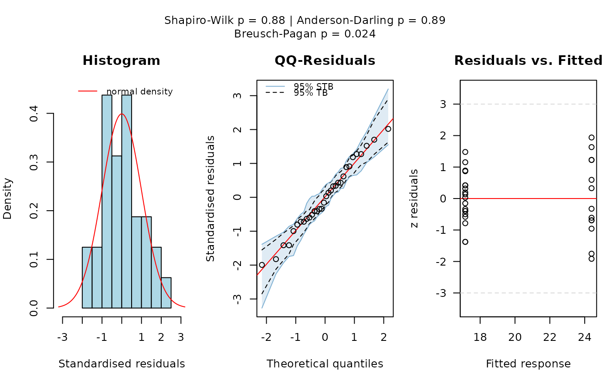
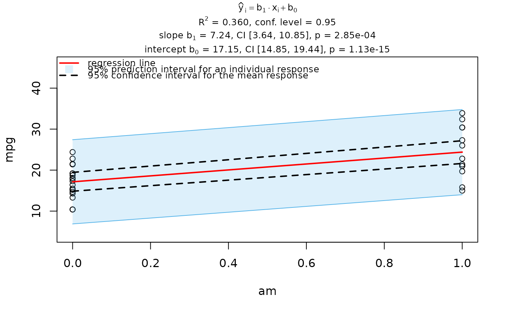
#> Warning: Statistical assumptions violated:
#> Homoscedasticity violated (Breusch-Pagan p = 0.0242 )
#> Analysis proceeded but interpret results cautiously.
#> RECOMMENDATION: Consider exploring alternatives outside visstat() such as data transformations,
#> generalised linear models, or robust regression. For a non-causal alternative
#> consider rerunning with correlation = TRUE.
## Wilcoxon rank sum test (wilcox.test())
grades_gender <- data.frame(
Sex = as.factor(c(rep("Girl", 20), rep("Boy", 20))),
Grade = c(
19.3, 18.1, 15.2, 18.3, 7.9, 6.2, 19.4,
20.3, 9.3, 11.3, 18.2, 17.5, 10.2, 20.1, 13.3, 17.2, 15.1, 16.2, 17.3,
16.5, 5.1, 15.3, 17.1, 14.8, 15.4, 14.4, 7.5, 15.5, 6.0, 17.4,
7.3, 14.3, 13.5, 8.0, 19.5, 13.4, 17.9, 17.7, 16.4, 15.6
)
)
visstat_core(grades_gender, "Grade", "Sex")
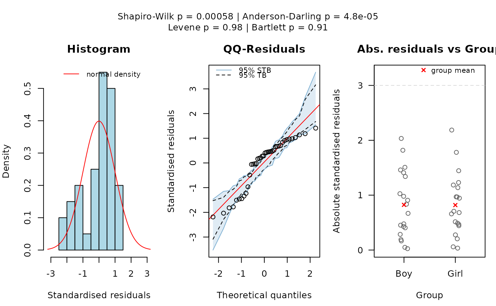
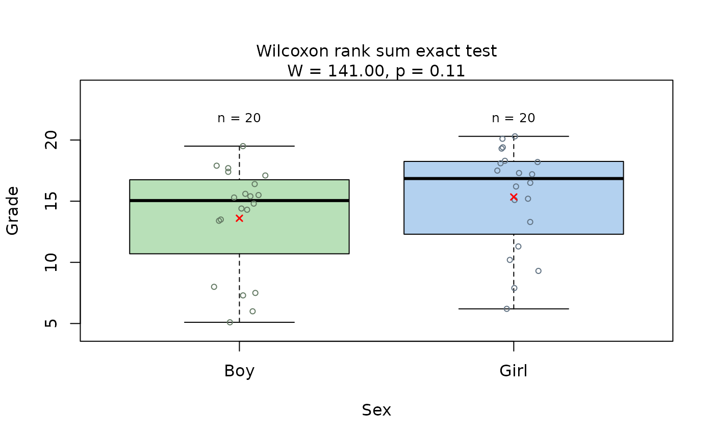
## Welch's oneway ANOVA not assuming equal variances (oneway.test())
anova_npk <- visstat_core(npk, "yield", "block")
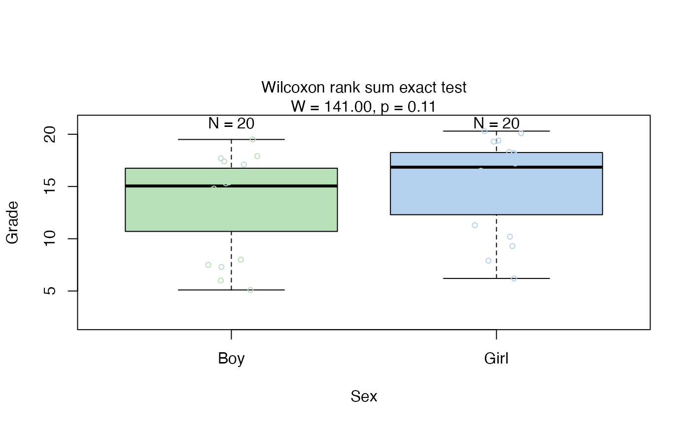
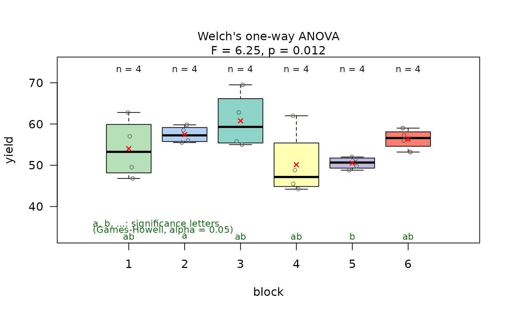
anova_npk # prints summary of tests
#> Object of class 'visstat'
#>
#> Available components:
#> [1] "summary statistics of ANOVA" "post-hoc analysis "
#> [3] "conf.level" "effect_size"
## Kruskal-Wallis rank sum test (kruskal.test())
visstat_core(iris, "Petal.Width", "Species")
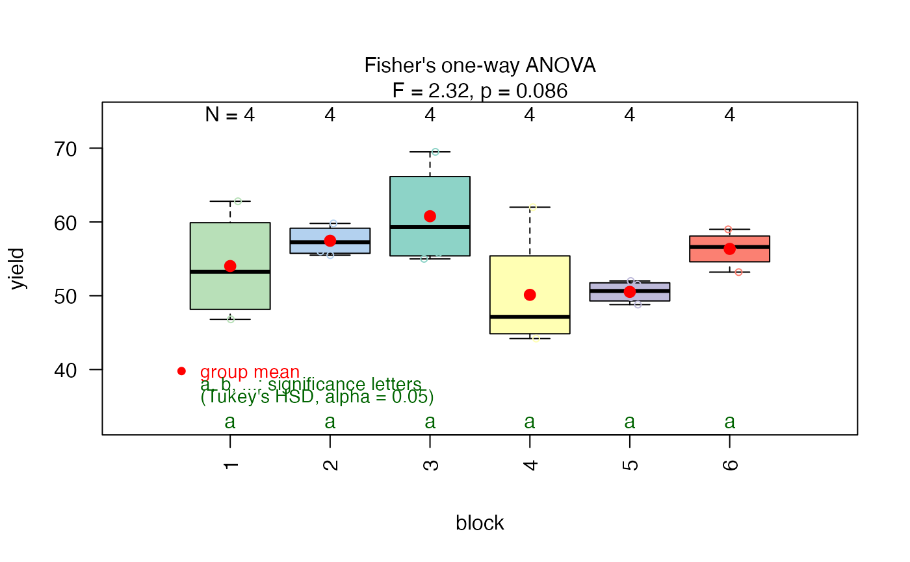
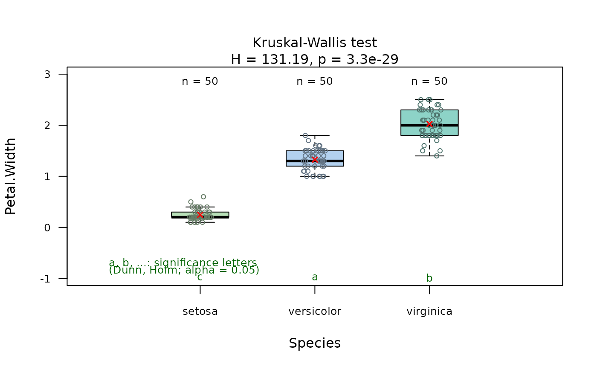
visstat_core(InsectSprays, "count", "spray")
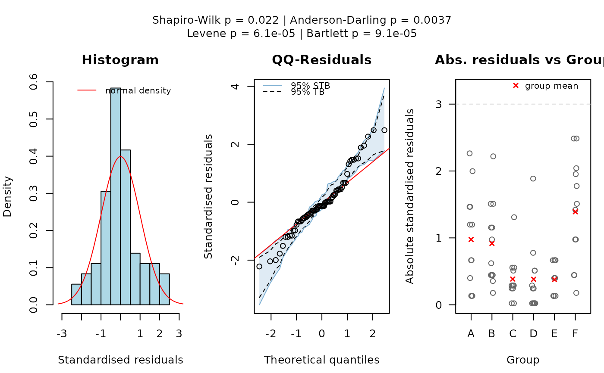
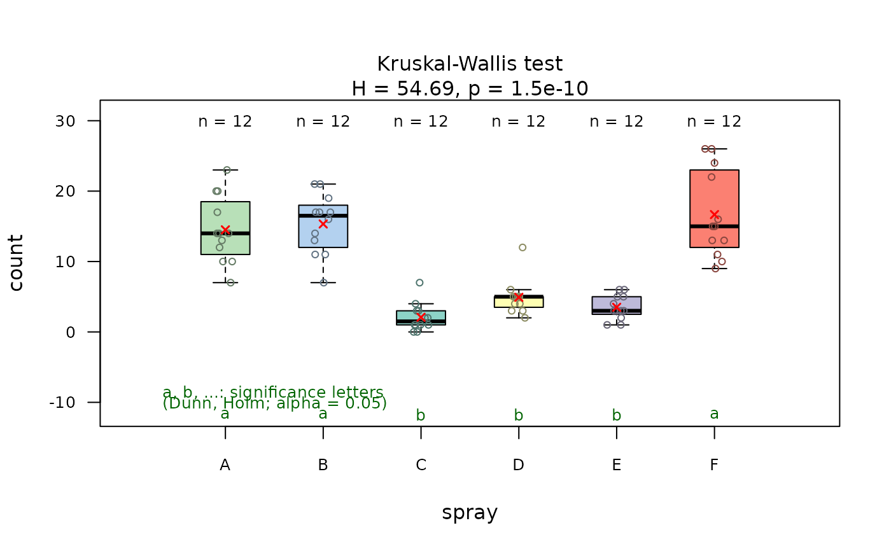
## Simple linear regression (lm())
visstat_core(trees, "Girth", "Height", conf.level = 0.99)
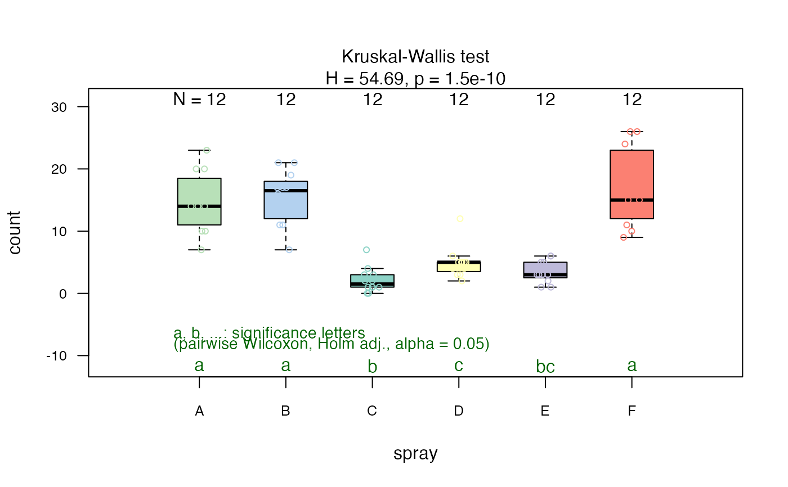
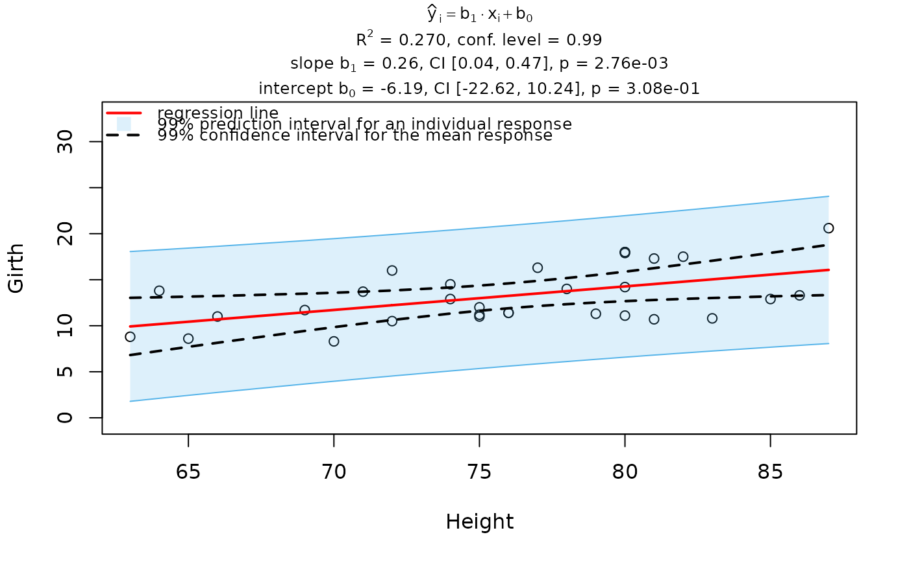
## Pearson's Chi-squared test (chisq.test())
### Transform array to data.frame
HairEyeColorDataFrame <- counts_to_cases(as.data.frame(HairEyeColor))
visstat_core(HairEyeColorDataFrame, "Hair", "Eye")

 ## Fisher's exact test (fisher.test())
HairEyeColorMaleFisher <- HairEyeColor[, , 1]
### slicing out a 2 x2 contingency table
blackBrownHazelGreen <- HairEyeColorMaleFisher[1:2, 3:4]
blackBrownHazelGreen <- counts_to_cases(as.data.frame(blackBrownHazelGreen))
fisher_stats <- visstat_core(blackBrownHazelGreen, "Hair", "Eye")
## Fisher's exact test (fisher.test())
HairEyeColorMaleFisher <- HairEyeColor[, , 1]
### slicing out a 2 x2 contingency table
blackBrownHazelGreen <- HairEyeColorMaleFisher[1:2, 3:4]
blackBrownHazelGreen <- counts_to_cases(as.data.frame(blackBrownHazelGreen))
fisher_stats <- visstat_core(blackBrownHazelGreen, "Hair", "Eye")
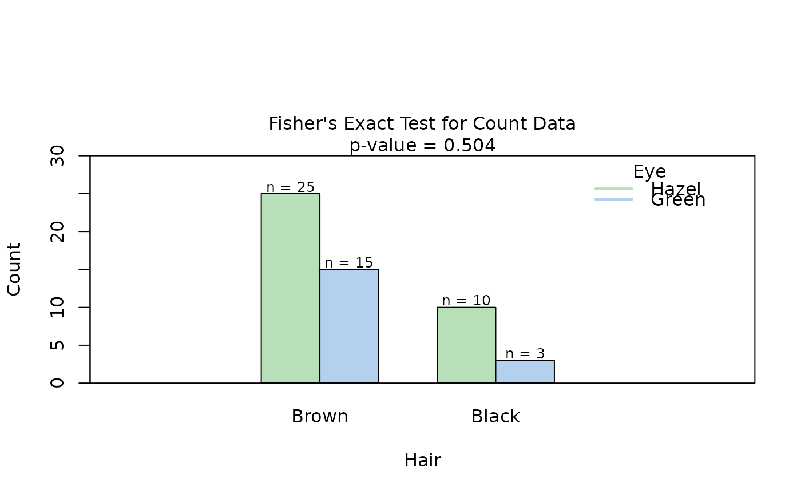
options(visStatistics.qq_nsim = old_qq_nsim)